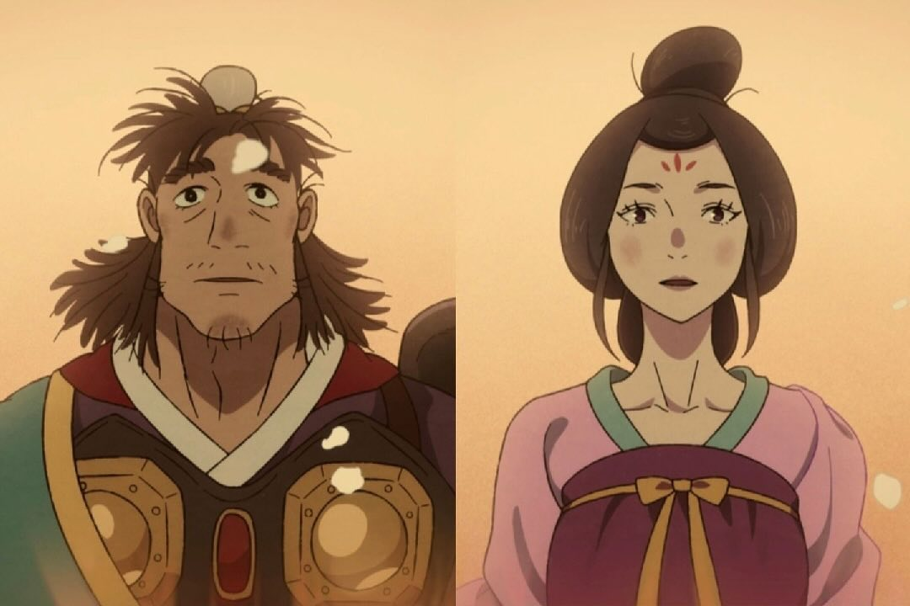
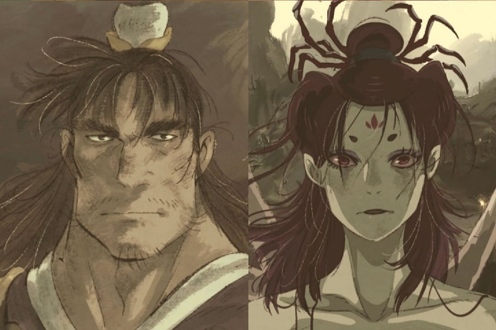

Black Myth Wukong
Sun Wukong
Visual Style and Techniques
Black Myth: Wukong uses top-level 3D engine technology, and the picture quality is quite exquisite. The game's environment design is full of elements of traditional Chinese culture, and the scenes are very exquisite, from the thick mythological atmosphere to the fantastic monsters and heroes.
In "Black Myth: Wukong", the story of Zhu Bajie and Zi Zhu'er is a tragic love story. Marshal Tianpeng had a brief encounter with Zi Zhu'er when he was in the Heavenly Palace. Zi Zhu'er fell in love with Marshal Tianpeng at first sight, but Tianpeng only had Taiyin Star Lord in his heart. During a chase, Tianpeng accidentally ran into the secret meeting between the Jade Emperor and Taiyin Star Lord, and was demoted to the mortal world and turned into a pig demon. After Zi Zhu'er learned that Tianpeng was demoted, she also chose to go down to the mortal world and turned into a spider spirit. The two met again in Pansiling, and Zi Zhu'er recognized Zhu Bajie, although Zhu Bajie could no longer remember her identity at this time. After the two briefly recognized each other, Zi Zhu'er was seriously injured by Baiyan Demon Lord, and Zhu Bajie secretly let her go out of his old feelings.
Tianpeng and Zizhuer
"Even if you change a lot, I still remember what you looked like at the beginning"
After being seriously injured, Zi Zhu'er survived by relying on the corpses of her sisters, and continued to run business for the Heavenly Court with her six daughters. Due to her serious injuries, she was left with the root of the disease "eight festivals and four seasons must be supplemented, and every supplement must be married". At the end of the story, Zi Zhu'er finally sacrificed herself in the confrontation with the Hundred Eyes Demon King to protect her daughter and Zhu Bajie. The last words she said to Zhu Bajie before she died were "You are still the same as then, stupid." Zhu Bajie had a deep affection for Zi Zhu'er. Although he did not dare to recognize her on the way to obtain the scriptures for fear of implicating her and his daughter, he always kept Zi Zhu'er in his heart. Zi Zhu'er's death was a great blow to Zhu Bajie, and he chose to leave and was unwilling to face reality. This story shows the deep feelings and helpless fate between the characters through delicate emotional depiction.